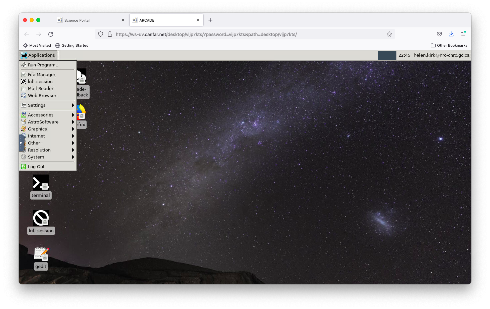
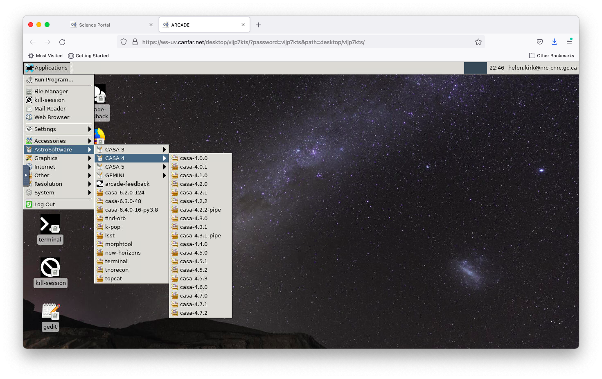
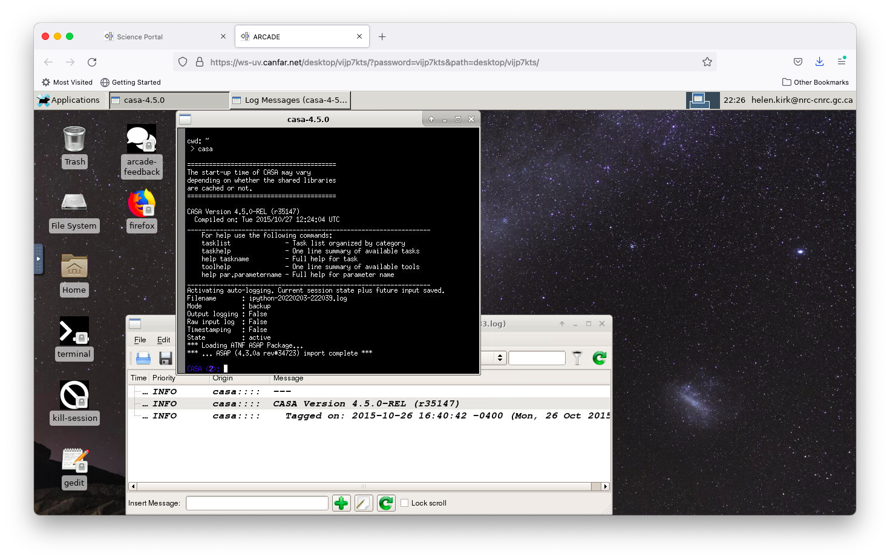
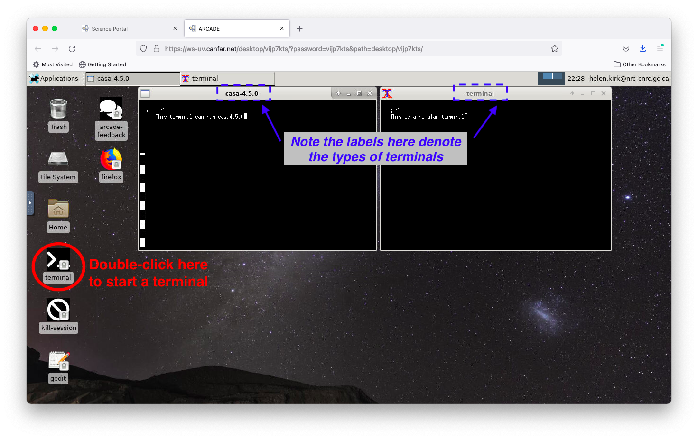

Starting CASA¶
Once you have launched a Desktop session, it is straightforward to run CASA in a terminal.

To start a CASA-enabled terminal, first click on the ‘Applications’ menu at the top left corner of your screen

Click through the ‘AstroSoftware’ and main CASA version to select the specific version that you want to use. Every version of CASA back to CASA 3.4.0 is available (this is the version of CASA which is tied to the scripts distributed with ALMA Cycle 0 data on the archive; see link here)

Clicking on your prefered version of CASA will open a terminal in which you can run CASA in the standard manner (typing either ‘casa’ or ‘casa –pipeline’ depending on the mode you wish to use). [NB: there are two dashes before ‘pipeline’ in the previous command]

You can open a regular (non-CASA) terminal by double-clicking the ‘terminal’ icon at the lower left side of the screen. Note that each terminal has a label on top which denotes what type of terminal it is (i.e., a plain terminal or the CASA version that is enabled). Only basic linux commands are recognized in the CASA terminals, so it is preferable to use a non-CASA terminal for all regular linux uses.
